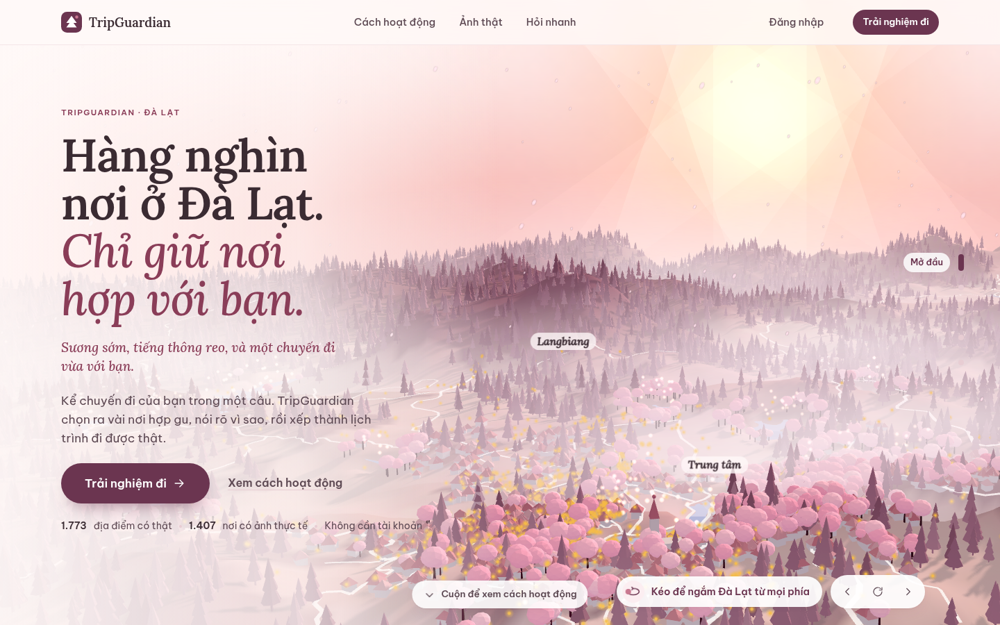

Thông tin rời rạc
Giờ mở cửa, vị trí, review và video nằm ở nhiều nguồn khác nhau.

Place intelligence · Đà Lạt
Từ hàng nghìn gợi ý rời rạc đến một chuyến đi có thể giải thích và kiểm tra.
05 · Trải nghiệm
“3 ngày ở Đà Lạt cho hai người, đi xe máy, thích chill, cà phê, săn mây.”

11 · Trải nghiệm người dùng


TripGuardian không lặng lẽ bỏ một nơi người dùng đã chọn.
TripGuardian
Sẵn sàng demo